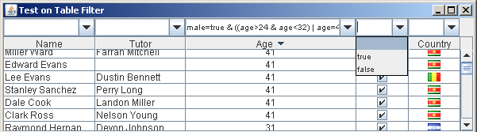
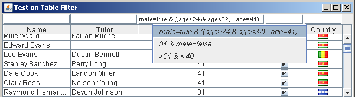
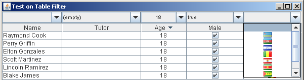

Filter Editors
TableFilter provides two types of filters; based on text parsing or based on single user choices. Users can create additional filters, based on the interface ITableFilterEditor.
All the editors available in the library are placed in the package com.byteslooser.filters.gui.editors.
The available editors are:
- TextChoiceFilterEditor: this is the default editor, corresponds to the mode BASIC in the TableFilterHeader.
- TextFilterEditor: this is an editor equivalent to the previous one, but with smaller size, corresponds to the mode SLIM in the TableFilterHeader.
- ChoiceFilterEditor: this is an editor where the user can only select an already provided filter choice; it is not directly available in the TableFilterHeader
- TableChoiceFilterEditor: this is an editor where the user can only select an already provided filter choice; it corresponds to the mode CHOICE in the TableFilterHeader.
The normal way to use these editors is under the TableFilterHeader, but they can be used on their own as well, as is explained in the .
TextChoiceFilterEditor

This is the editor that TableFilter uses by default. Its displayed as a JComboBox, where the user can enter manually the expression to parse.
The editor is not responsible to perform the parsing, which is delegated to a IFilterTextParser instance. Users can define their own parsers, or use the default one.
The editor places in the combobox the last valid parsed expressions, facilitating the input of multiple filters. It also supports the concept of predefined choices, which are shown to the user together with the last used expressions. When used in a TableFilterHeader component, in table columns with Boolean or Enumeration types, the different boolean or enumeration values are automatically setup as editor' choices.
As a parsing editor, it can compose as complex filter expressions as the associated parser support, but it supports little customization. Its interface includes a few methods to handle the historic / choice values:
- setHistoricLength and addToHistoric control the historic values.
- suggestChoices supports customizing the choices that are always shown to the user.
TextFilterEditor

This editor matches most of the functionality exposed by the TextChoiceFilterEditor, but using a JTextField, which implies an smaller size.
It is also still able to support historic values, showing them in a contextual menu.
Therefore, its interface is very similar; it only lacks the option to provide prefixed choices
ChoiceFilterEditor
This editor is not directly available in the TableFilterHeader, which uses better the TableChoiceFilterEditor, an specialization of the ChoiceFilterEditors which is automatically prepopulated with the contents of the table's column.

In this editor, the user cannot provide an expression, just choosing among the provided filters. Its main advantage against the parsing editors is its support for better customizations. For example, the figure above has this editor showing the different country flags. Lacking this visual approach, the user would be forced to use some string representation for the icons.
This visual customization is directly provided by the JComboBox class, through the ListCellRenderer, although the ChoiceFilterEditor defines the more specific IRenderer interface to do the same.
This editor is not only interesting when the associated object has a visual rich representation, like the icons in the previous figure, but also when the choices are prefixed, like in the image below, where the user can choose exams whose qualifications match given ranges:

This second customization is provided through the IChoice interface.
To use this editor directly, the user must provide all the available choices, using the defined interface. It supports the concept of other choices, which is simply an additional choice whose selection implies the negation of any other shown choice. In most cases, the user will use the TableChoiceFilterEditor, where the choices are automatically extracted from the table's values.
TableChoiceFilterEditor
The images above, for the ChoiceFilterEditor describe equally the TableChoiceFilterEditor. This is an specialization of the ChoiceFilterEditor that provides automatically the initial choices, and with an extended interface, to define how to extract choices from the table.